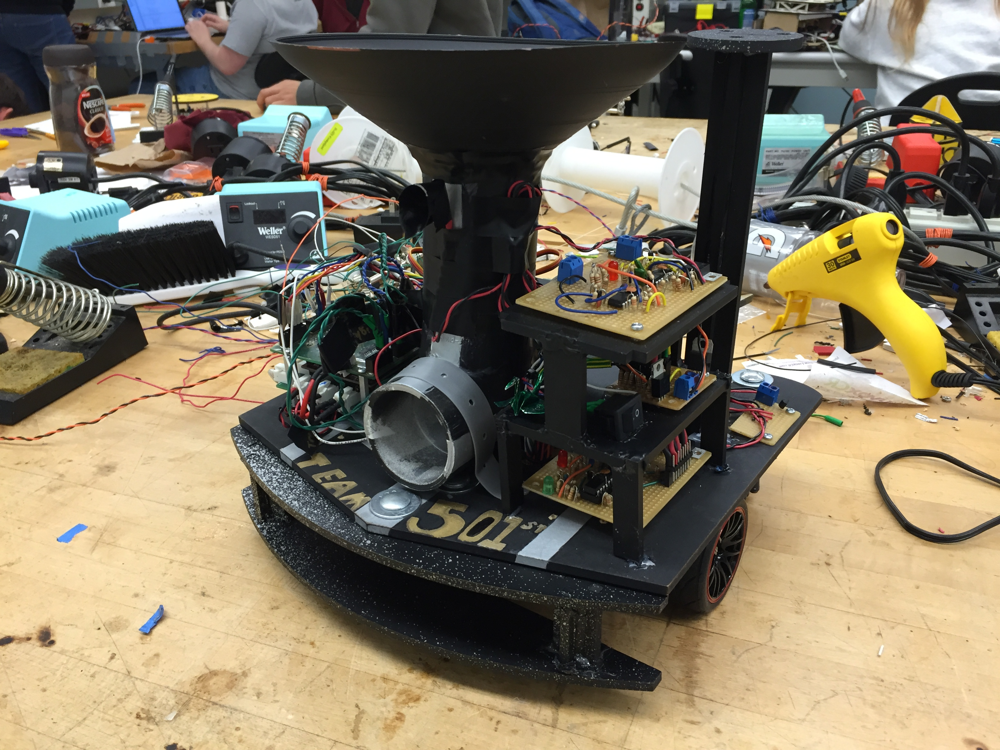

University Projects
Autonomous Ocean Sediment Collection Device
- For my Senior Capstone Project at the University of California, Santa Cruz myself and three other engineers worked to design, build, program, test and successfully launch the device you see above. We partnered with researchers at the Long Marine Lab in Santa Cruz to implement a more effective and easier to use method to collect sediment samples from the ocean floor.
- Using a large claw like device, the current method for sediment collection is expensive, dangerous, inefficient and takes up to five people to operate on a large boat. Our device can be operated by two people on a small research boat, and is controlled wirelessly via smartphone. Furthermore our device utilizes a standard 80 cubic foot scuba tank to power the vacuum collection system and to inflate the lift bag that enables retrieval at the surface. Creating a very efficient system that yields a high quantity of sediment.
- Our first full system test was completed at the Monterey Bay Aquarium Research Institute's 40 foot testing facility. We concluded our project with a successful ocean test under the Monterey wharf where we successfully collected sediment samples. We then went on to win 3rd Place at the IDEA Hub's Pitch for Social and Creative Enterprise competition.
- More information is available on the following overview poster.

Mechatronics Final Project: Slug Wars
- Tasked to design, prototype, program and build a fully autonomous robot from the ground up in four weeks, myself and two other engineers worked non-stop to successfully complete the project on time. We utilized mechanical design with SolidWorks, state-machine inception and implementation with event-driven programming in C on a PIC32 micro-controller, and sensor scheme architecture and construction. Rapid design, prototyping and debugging played a key role in the development process.
- The robot is equipped with a 2kHz IR beacon detector, track wire and tape detectors, front and back bump sensors, two drive motors and a servo motor and server fan for the firing mechanism. Which is able to fire ping pong balls collected by the inverted cone on the top of the robot.
- Here are the field specifications along with a local news report about the project.
- We concluded our project with a successful in lab checkoff as well as a successful public demonstration.
{kind=link}